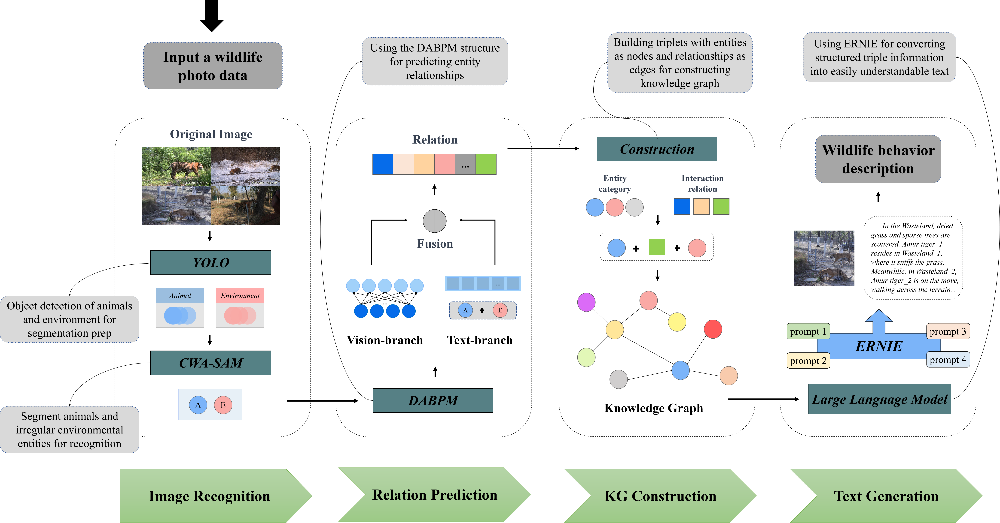

The overview of EKG-WildBehavior
Comprehensive end-to-end system for automated wildlife behavior identification utilizing knowledge graph integration.
Animal and environmental entity identification
Advanced detection and segmentation of wildlife subjects and their surrounding environment elements.
Dual-branch animal behavior prediction module
Multi-modal processing combining visual features and textual information for accurate behavior prediction.
Generation of behavior descriptions based on LLMs
Natural language behavior descriptions generated using knowledge graph-informed large language models.